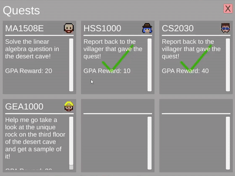
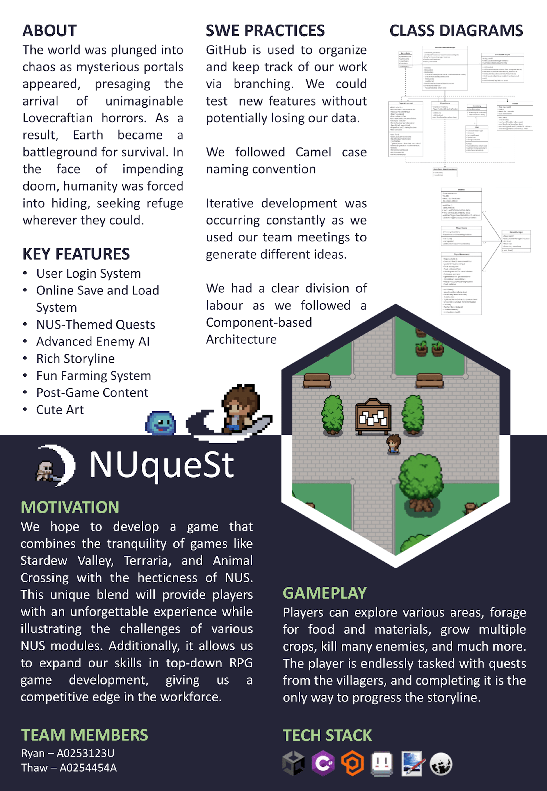
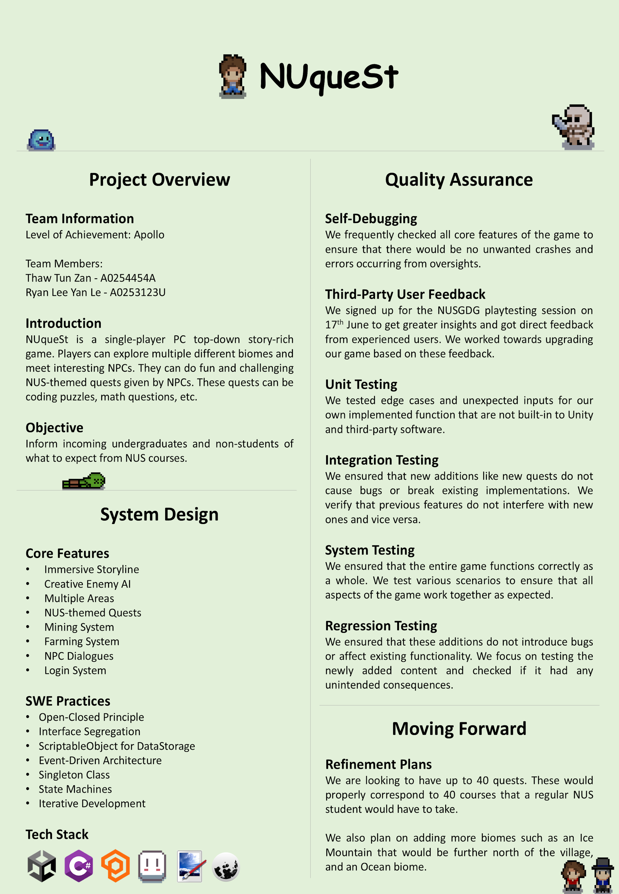
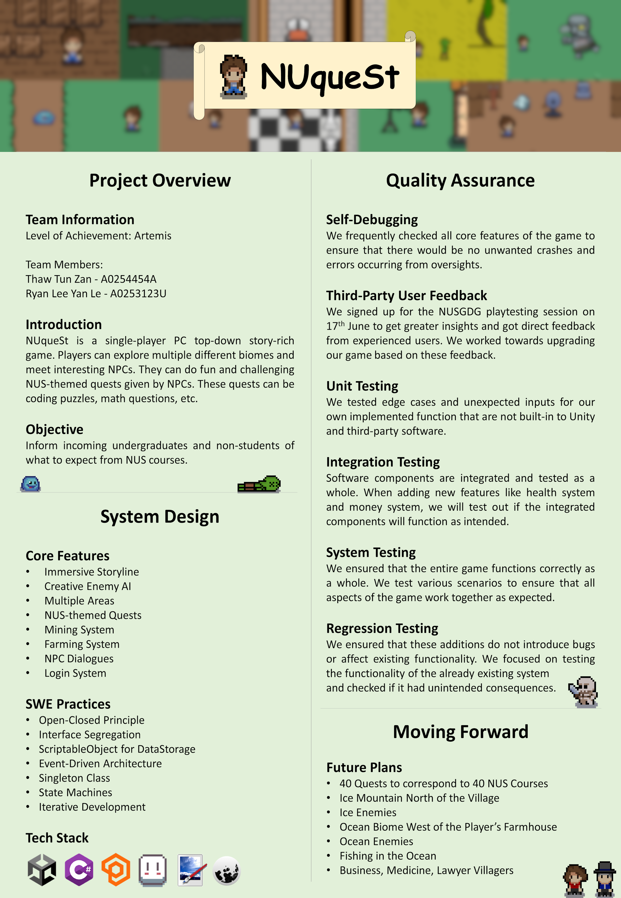
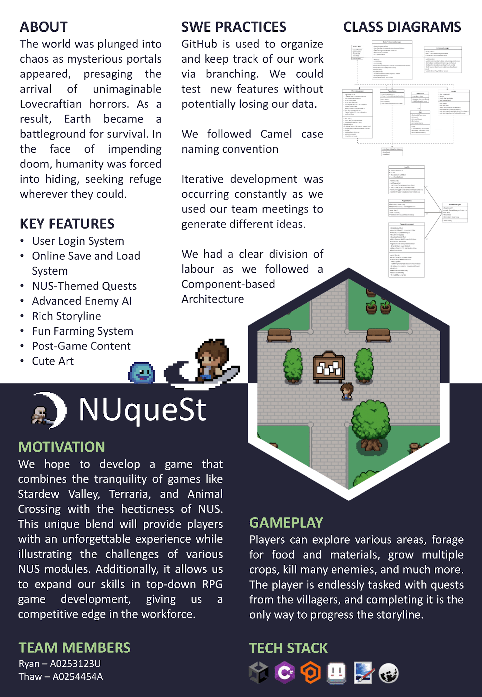
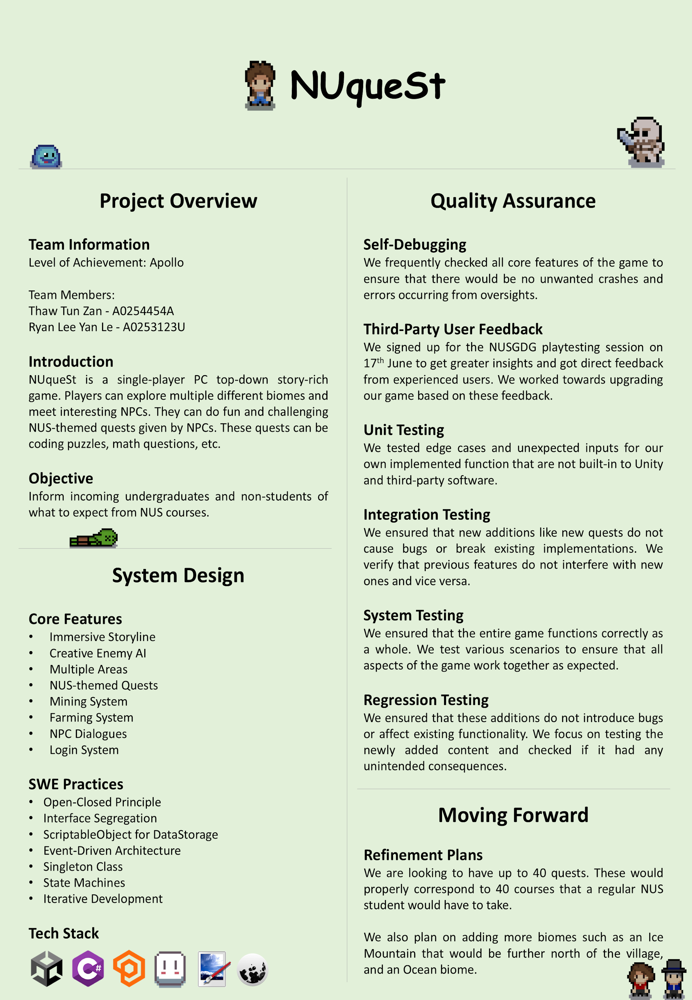
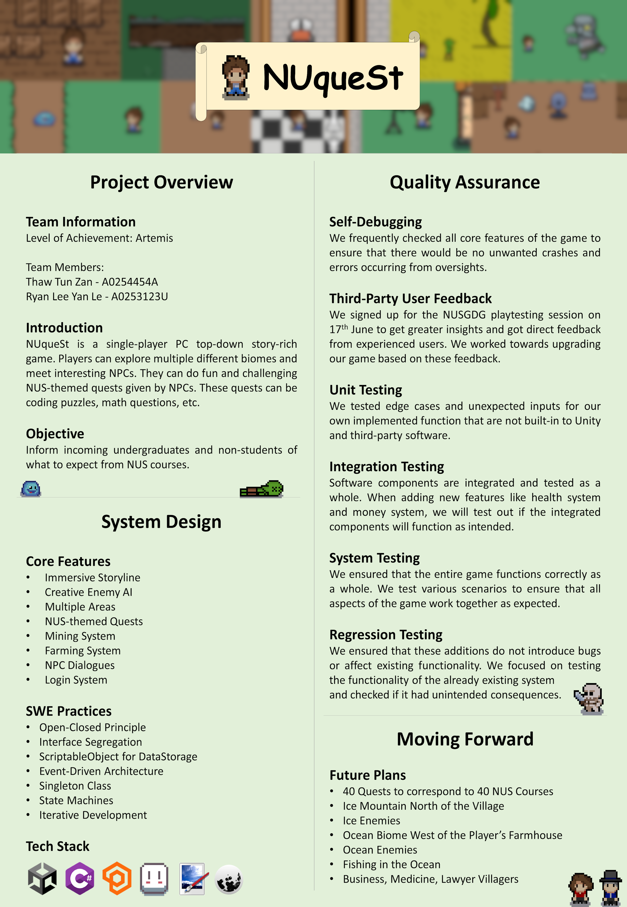
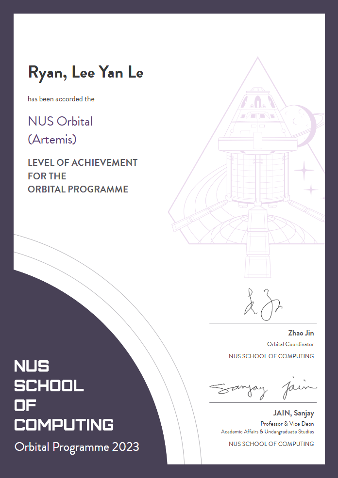
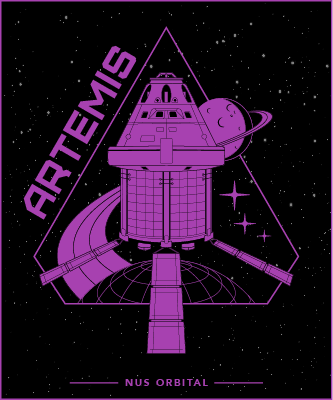

Orbital NUqueSt


NUqueSt is a 2D Top-Down Action-Adventure Singleplayer Questing game. It was heavily inspired by Stardew Valley, incorporating core gameplay elements such as fighting, farming and mining. It featured 3 different biomes, 8 Non-Playable-Characters (NPCs), 6 ores, 3 enemies, 1 boss and 40 quests.


The main purpose of creating NUqueSt was to help familiarise incoming undergraduates with the challenges of various courses in a fun and interactive way. We achieved this by gamifying each course into a quest. For example, the computing course “CS1010” became an N-Queens puzzle, where players had to provide two valid configurations for placing 5 queens on a 5x5 board. These quests are given by the NPCs, and reward the player with GPA upon completion.
 





My friend Thaw and I developed NUqueSt for CP2106 (Orbital), a three-month software engineering course at NUS during AY22/23 Special Term. We followed an agile methodology with monthly sprints. Each sprint began with planning feasible features and ended with peer reviews, alongside the creation of a poster and video to showcase the project. We then incorporated feedback in subsequent sprints, guiding us toward the right direction.

